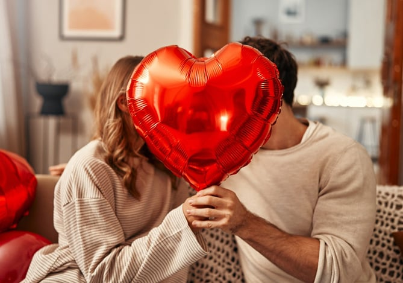

❤️ Feliz Dia dos Namorados! ❤️

O verdadeiro amor é de prender o ar
O Dia dos Namorados é uma data especial para celebrar o amor, o companheirismo e os momentos inesquecíveis vividos ao lado de quem faz nossos dias mais felizes. No Correio do Cupido, você encontrará mensagens românticas, curiosidades sobre o amor, ideias para alimentar seu amor e um espaço para compartilhar seus sentimentos com alguém especial.
🎁 Ideias de Presentes
Flores e Plantas
Rosas vermelhas para paixão, rosas rosas para carinho, girassóis para admiração, flores são perfeitas para representar seu amor. Uma plantinha também é um presente que cresce junto com o relacionamento.
Presente Personalizado
Álbum de fotos, quadro com data especial, caneca personalizada ou um mapa estrelado do momento em que vocês se conheceram. Além de possuírem o seu esforço, são únicos e inesquecíveis.
Experiências Gastronômicas
Cesta de chocolates artesanais, jantar a dois em casa com cardápio especial ou reserva em um restaurante que os dois queiram conhecer há tempo.
Experiências e Passeios
Show dos sonhos, spa a dois, viagem surpresa de fim de semana. Momentos marcantes valem mais do que qualquer objeto.
📅 O Que Fazer no Dia dos Namorados
🕯️ Jantar Romântico em Casa
Cozinhe o prato favorito do casal, acenda velas, coloque uma playlist especial e desligue os celulares. Simples, íntimo e muito mais memorável do que qualquer restaurante.
🌅 Passeio ao Ar Livre
Piquenique num parque, trilha ao nascer do sol ou simplesmente sentar à beira de um lago. Momentos na natureza criam memórias poderosas e ajudam a desacelerar juntos.
🎨 Tarde Criativa
Pintura em tela, aula de dança, cerâmica ou culinária juntos. Aprender algo novo a dois é divertido, descontraído e abre espaço para risadas e cumplicidade.
🎬 Noite do Cinema em Casa
Montem juntos uma maratona de filmes com significado para o casal, o primeiro que assistiram juntos, o favorito de cada um. Cobertores, pipoca e o sofá são tudo o que precisam.
💘 Ideias para Demonstrar Amor
💌 Escreva uma carta ou mensagem especial
Palavras escritas à mão têm um valor inestimável. Dedique um tempo para expressar seus sentimentos com sinceridade é um presente que dura para sempre.
🌹 Presenteie com flores
Cada flor tem um significado especial. A rosa vermelha representa paixão, a rosa rosa transmite carinho, e o girassol simboliza admiração e lealdade.
🍫 Compartilhe chocolates ou uma refeição especial
Cozinhar junto ou reservar uma mesa no restaurante favorito cria memórias afetivas. O ato de compartilhar uma refeição é um dos gestos mais íntimos que existem.
🎬 Assista a um filme juntos
Monte um cinema em casa com cobertores, pipoca e as luzes apagadas. Escolham juntos o filme e aproveitem o momento sem distrações de celular.
📸 Relembre momentos marcantes
Crie um álbum de fotos físico ou digital com os melhores momentos do casal. Relembrar juntos a trajetória do relacionamento fortalece os laços afetivos.
🌟 Faça uma surpresa inesperada
Pequenas surpresas no dia a dia valem mais do que grandes gestos pontuais. Deixar um bilhetinho, levar o café da manhã na cama ou planejar um passeio surpresa são ideias simples e encantadoras.
💝 Qual é o seu estilo de amar?
Gary Chapman identificou 5 linguagens do amor. Descubra qual é a sua!
Palavras de Afirmação
Você se sente amado quando ouve elogios, declarações e palavras encorajadoras.
Tempo de Qualidade
Presença total e atenção exclusiva são mais importantes do que qualquer presente.
Presentes
O ato de receber ou dar presentes, mesmo que simples, representa amor e consideração.
Atos de Serviço
Ajudar nas tarefas do dia a dia e aliviar as responsabilidades do outro é amar na prática.
Toque Físico
Abraços, beijos e gestos físicos de carinho são sua principal forma de sentir amor.
🏹 Mensagem do Cupido
"O amor está nos pequenos gestos, nas palavras sinceras e nos momentos compartilhados com quem faz a vida mais feliz."
✉️ Envie uma mensagem especial
Que tal escrever agora para aquela pessoa especial? Acesse o Correio do Cupido e mande uma mensagem inesquecível!
Ir para o Correio ❤️